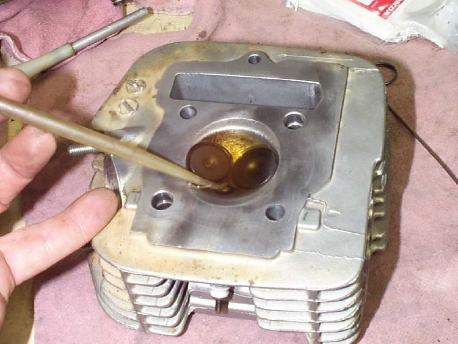
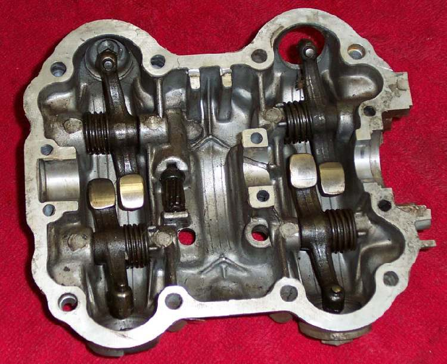
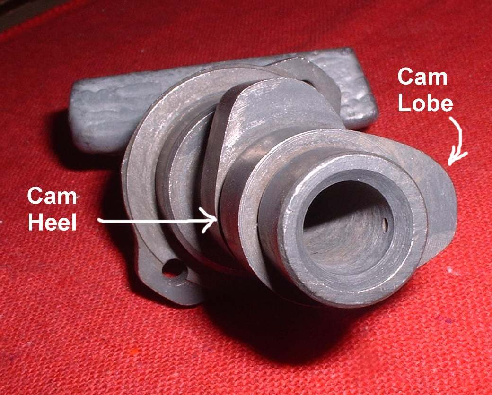

The cylinder head is the finned cap on top of the cylinder. It holds the spark plug and, on a four-stroke, the valves, springs and rocker arms or camshaft. On a two-stroke it is a simple cover with a combustion chamber shape.
What it does
The head closes the top of the cylinder so the burning mix can push the piston. On a four-stroke the valves in the head open to let mix in and exhaust out, then close tight for compression. The head gets very hot, so it can warp if the engine overheats, and carbon builds up in the combustion chamber over time.
Signs it is worn or failing
- Oil leaking from the head or base gasket.
- Low compression from a leaking valve or head gasket.
- Ticking from the top of the engine.
- Blue smoke from worn valve guides or stem seals.
- Pinking from heavy carbon.
- Cracked fins or a stripped spark plug thread.
When to replace it
Replace the head if it is cracked, if the plug thread is stripped beyond a thread insert repair, or if it is warped past the limit and cannot be skimmed flat. Worn guides and seats can often be repaired by a workshop. Follow your bike's manual.
What to match when buying
- Match the engine code and model. Heads that look the same can differ in valve size, port shape, plug thread and pushrod or cam layout.
- Check whether the head comes bare or with valves fitted. A "complete" head still needs the clearances set.
- Genuine heads have clean casting, smooth ports and straight, crack-free fins. Avoid heads with rough porosity holes, crooked plug threads or valve seats that are not round.
- Always fit a new head gasket.
Fitting notes
- Workshop job. Tighten head nuts in steps and in the order the manual gives. Do not use a torque from another engine.
- Check flatness with a straight edge and feeler gauge before fitting.
- After fitting, set valve clearance and do a compression test. See Assess the top end.
Reference (K-Light 125)
| Item | Value | PDF page |
|---|---|---|
| Head flatness | standard 0.03 mm, limit 0.05 mm | 202 |
| Valve seat width | 0.8 to 1.0 mm, limit 1.6 mm | 202 |
| Valve clearance (cold) | inlet and exhaust 0.05 to 0.07 mm | 202 |